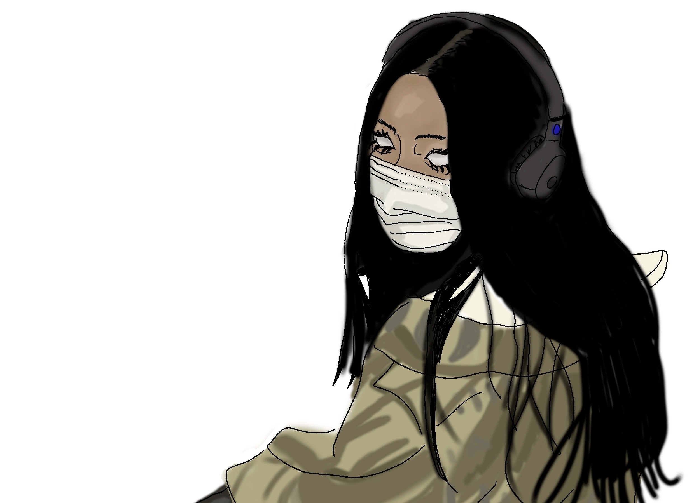
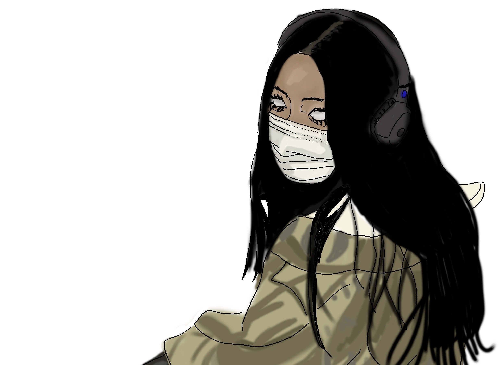
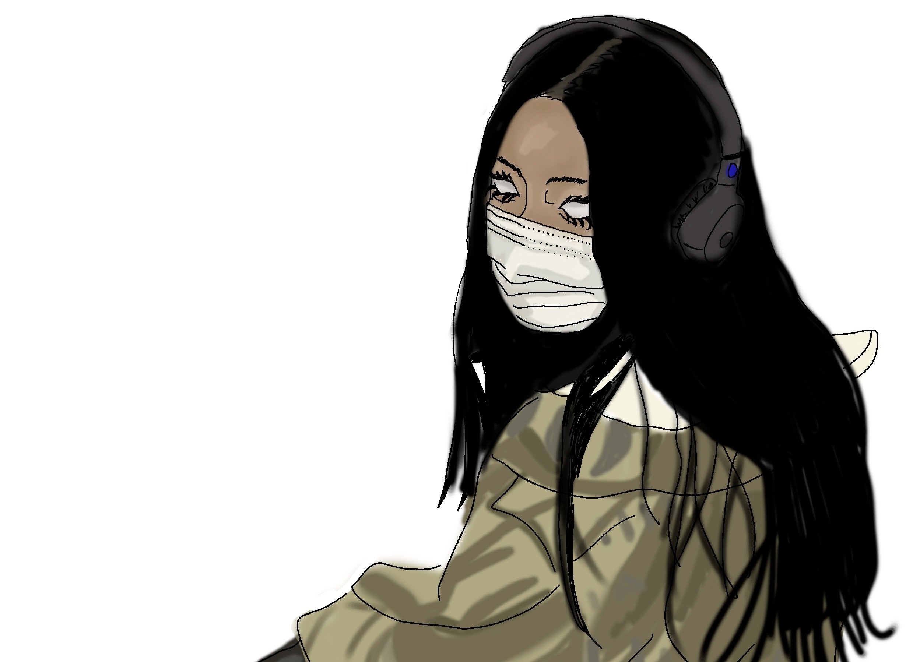

Графический дизайн
Индивидуальный стиль
- Собственный стиль представляет минималистичные линии в хаотичном расположении. Преимущественно серого и черного цвета. В книжной продукции также преобладает минимализм и не типичная верстка.

Я закончила МКИК или ИГУМО, живу и работаю в Москве.
Работаю над разработкой печатной продукции, занимаюсь книжной и журнальной версткой Создаю интересные работы в своем стиле. Имею образование издателя, проходила курсы по обучению навыкам графического дизайна и академического рисунка
t.me/krrosh

Индивидуальный стиль